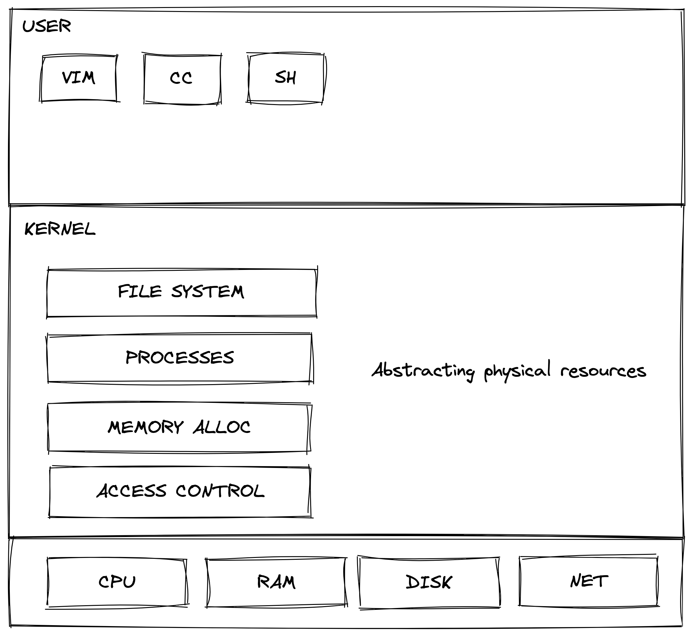

eraft 精解课程
我们团队致力于解读国外优秀的分布式存储相关开源课程，下面是课程体系图 我们始终坚信优秀的本科教学不应该是照本宣科以及应付考试，一门优秀的课程，应该具备让学生学会思考、动手实践、找到问题、反复试错、并解决问题的能力，同时应该尽量用最直白，最简单的语言传达关键的知识点。作为计算机工业界的工作者，我相信做课程和做技术一样，并不是越复杂越好，应该尽量的让设计出来的东西简单化。 关注我们的最新动态，欢迎关注 https://www.zhihu.com/people/liu-jie-84-52 接下来我们进入正题，如何实现一个分布式系统。

MIT 操作系统系列-操作系统概述
操作系统的结构如下，在 MIT 6.828 的课程中的图，很清晰的展示了一个操作系统的结构。

我们从上往下看，最上层是用户层。比如我们要编辑一个文件，我们需要使用到文本编辑器 VIM。我们需要编译一个 C 程序，需要用到 CC 编译器。我们要和操作系统通过终端命令交互，需要用的 SH 程序模块。
这些都是我们平常用操作系统可以直接接触到的，那这些程序是怎么运行的呢？这就需要我们往下看了，下一层是内核层。和用户层的程序不一样，下面的内核层的程序只要机器开机就会会一直运行着，守护者整个计算机的资源。如图中文件系统是用来管理文件怎么在磁盘上存取的，而且操作系统还可以让多个程序共享CPU并行执行，让用户看起来像是多个程序同时在执行。同时内核还会管理操作系统内存的分配，保障不同进程对内存的访问的安全性。当多人共用操作系统的时候，你可能不希望其他人看到你的私人文件，操作系统也会对不同用户进行访问权限的控制。当然这个图这是画了主要的几个，还有很多硬件都需要操作系统内核来抽象支持，使得用户层程序能够更低成本的使用硬件资源。
设计操作系统的初衷：我们为什么需要一个操作系统呢？为什么不让程序跑在硬件上？
一、抽象：隐藏了硬件的细节，方便用户使用；能最大程度的发挥硬件的性能；支持大范围的应用程序
二、多路复用：允许多个应用程序之间共享硬件资源；提供隔离性来控制漏洞以确保安全性；共享资源方便多个用户之间进行协作
捐赠
整理这本书耗费了我们大量的时间和精力。如果你觉得有帮助，一瓶矿泉水的价格支持我们继续输出优质的分布式存储知识体系，2.99¥，感谢大家的支持。

遵循MIT协议开源。
感谢 「赫蹏」 提供如此优秀的中文排版系统